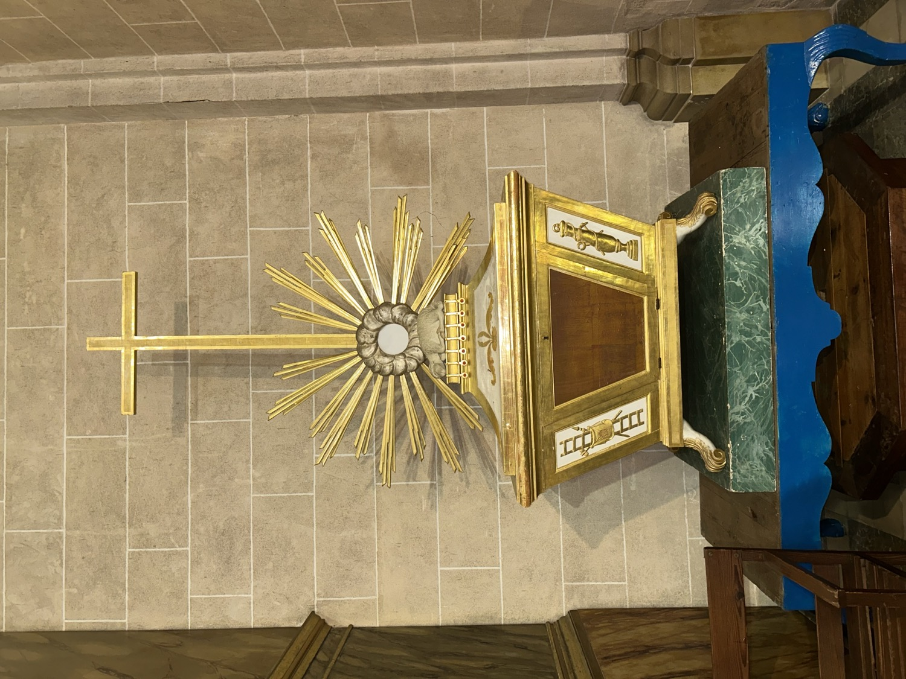

La Casa Santa és un altar o monument efímer que es munta entre el Dijous i el Divendres Sant per a la reserva eucarística. Com que el Divendres Sant no se celebra el sagrament de l'Eucaristia com a mostra de dol per la mort de Jesús, el Dijous Sant s'han de consagrar més formes perquè els fidels puguin combregar l'endemà. Les formes reservades per al Divendres es guarden en una urna com aquesta, que es col·loca sobre un altar ornamentat de manera solemne.
Aquesta urna està decorada amb diversos emblemes de la Passió, objectes associats al patiment i la mort de Jesucrist que amb el temps s’han convertit en símbols de devoció cristiana. En concret hi apareixen els següents: l’escala utilitzada durant la crucifixió i el davallament de la creu; la llança amb què el soldat Longí travessà el costat de Jesús; l’espongera amb què li oferiren vinagre per beure; el vel de la Verònica amb la Santa Faç; la columna on Jesús va ser lligat i assotat; el flagell amb què va ser assotat; el martell amb què li clavaren els claus, i les tenalles amb què el desclavaren. A la coberta de l’urna hi ha un anyell jacent que simbolitza Jesucrist, l’Anyell de Déu, sacrificat pels pecats del món. Darrere seu hi apareix una resplendor de rajos que simbolitza la seva glòria divina.